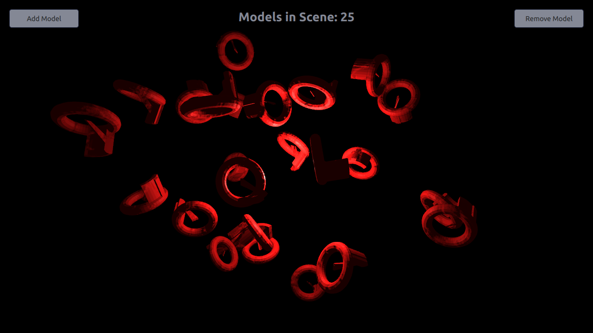

Qt Quick 3D - Dynamic Model Creation Example
Demonstrates dynamic model creation.
This example demonstrates creating models dynamically in an application. 10 models are created dynamically at the start of the application, and more can be added or removed using the Add Model and Remove Model buttons. Dynamic model count is limited to 100 in this example, but that is in no way a limitation of QtQuick3D.

Setting Up
Spawner Node
We are going to need a Node to hold the dynamically created models.
Node { id: shapeSpawner property real range: 300 property var instances: [] readonly property int maxInstances: 100 function addOrRemove(add) { ...
Startup
We're creating 10 models at Component.onCompleted to avoid opening into an empty view.
Component.onCompleted: { // Create 10 instances to get started for (var i = 0; i < 10; ++i) shapeSpawner.addOrRemove(true); }
Dynamic Models
The addOrRemove() function called during startup can add or remove the models.
Adding Models
A model component is created using the Qt.createComponent function, and instantiated with position and scale parameters using the createObject function.
// Create a new weirdShape at random postion var xPos = (2 * Math.random() * range) - range; var yPos = (2 * Math.random() * range) - range; var zPos = (2 * Math.random() * range) - range; var weirdShapeComponent = Qt.createComponent("WeirdShape.qml"); let instance = weirdShapeComponent.createObject( shapeSpawner, { "x": xPos, "y": yPos, "z": zPos, "scale": Qt.vector3d(0.25, 0.25, 0.25)}); instances.push(instance);
Removing Models
Dynamically created models are removed simply by popping and destroying them from the instance stack.
// Remove last item in instances list let instance = instances.pop(); instance.destroy();
Files: